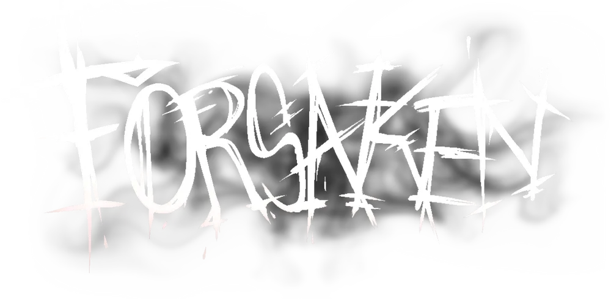
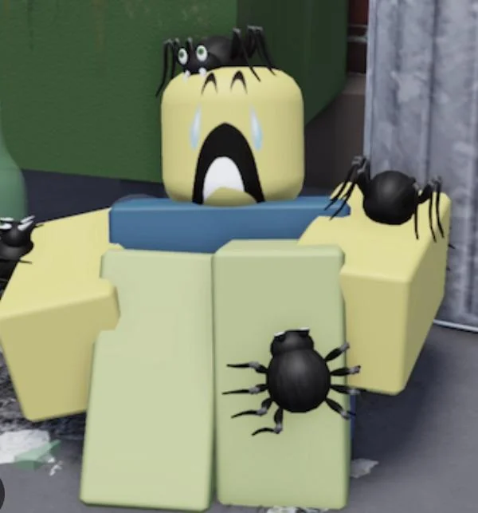

<!DOCTYPE html>
<html lang="en"></html>

<div class="container">
    <div class="box">
        <head>
            <link rel="stylesheet" type="text/css" href="../assets/stylesheet-forsaken.css">
        </head>
        <body>
            <header>
                
                <h1 class="center-text">Horror Survival: Forsaken</h1>
            </header>
            <main>
                <h2 class="center-text">Eternal <span style="color: purple;">Damnation</span></h2>
                

                <h2>Description of <span style="color: red;">The</span> Game</h2>
                    <p>
                        Forsaken is an asymmetrical <span style="color: red;">"killer vs. <span style="color: lightblue;">survivors</span>"</span> type game where the
                        survivor's objective is to survive until the timer runs out. The killers, however,
                        have the objective of killing every survivor on the map, each kill granting more
                        time for them to play around with. Survivors however can complete generators to decrease the time.
                        As of the moment, there are 5 killers and 10 survivors, all of them having special gameplay of their own.
                    </p>

                <h1>Mechanics</h1>
                
                <h2>Survivors: <span style="color: lightblue;">Preys</span> of The Game</h2>
                
                    <p>
                        Survivors are the people who are <span style="color: red;"><b>DAMNED</b></span> in this eternal hell.
                        Their only objective is to survive until 4 minutes are up. However, each death adds 30 seconds
                        onto the current timer, causing the failure of protecting your teammates to be detrimental.
                    </p>
                    <p>There are three types of survivors:</p>

                <h2 style="color: darkgoldenrod;">Sentinels</h2>
                
                    <p>
                        They help the team live by stunning the killer and taking hits for other survivors. Gameplay of this class is
                        usually adrenaline-rushing as there's always a risk of you dying when saving someone.
                    </p>
                <h2 style="color: purple;">Survivalists</h2>
                
                    <p>
                        Their abilities focus on saving themselves more than their teammates. Gameplay of this class is highly-pressuring due to the fact
                        the killer will <span style="color: red;"><b>ALWAYS</b></span> get you.
                    </p>
                <h2 style="color: lightgreen">Supports</h2>
                
                    <p>
                        They support the team with healing, placing down building that slow down the killer, or traps that explode
                        and blind them.
                    </p>
            </main>
        </body>
    </div>
</div>